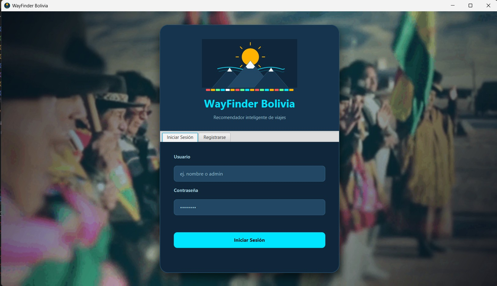

Ingeniería de Sistemas
Institución: Universidad Católica Boliviana "San Pablo"
Período: -
Estado / Grado: Licenciatura en curso (4º Semestre)
Currículum Vitae | Ingeniería de Sistemas
Estudiante de Ingeniería de Sistemas | Universidad Católica Boliviana "San Pablo" | La Paz - Bolivia
Estudiante de Ingeniería de Sistemas de cuarto semestre en la UCB, caracterizada por un sólido enfoque en la lógica de programación, el análisis algorítmico y el diseño estructurado de software. Orientada al desarrollo de soluciones tecnológicas eficientes, combinación de rigor académico con habilidades clave en la resolución de problemas y gestión colaborativa de proyectos.
"La tecnología es una herramienta de transformación; el código limpio y estructurado es el puente hacia el futuro."
¡Hola! Soy una apasionada del desarrollo de software enfocado en la creación de soluciones digitales eficientes. Me defino como una profesional constante, analítica y en continuo aprendizaje.
Desarrolladora enfocada en la maquetación web semántica y lógica de programación. Cuento con formación académica sólida en estructuras de datos, backend con C++ y Java, y gestión de bases de datos relacionales.
Objetivo profesional: Formar parte de un equipo multidisciplinario donde pueda impactar positivamente a través del desarrollo de código limpio, optimizando procesos y escalando mis habilidades hacia el desarrollo Full Stack.
Explora mis principales fortalezas y competencias clave:
Institución: Universidad Católica Boliviana "San Pablo"
Período: -
Estado / Grado: Licenciatura en curso (4º Semestre)
Institución: Colegio Inglés Católico
Año de finalización:
Grado obtenido: Bachiller en Humanidades (Egresada)
| Carrera / Grado | Institución | Período | Estado / Grado Obtenido |
|---|---|---|---|
| Ingeniería de Sistemas | Universidad Católica Boliviana "San Pablo" | – Presente | 4º Semestre (En curso) |
| Bachillerato en Humanidades | Colegio Inglés Católico | Bachiller (Egresada) |
Cargo: Técnico de Mantenimiento y Optimización
Empresa/Institución: Servicio Independiente / Proyecto Personal
Período: – (2 meses)
Descripción de funciones: Diagnóstico de hardware y software en equipos de cómputo, ejecución de mantenimiento preventivo/correctivo y optimización del sistema para extender la vida útil del equipo.
Principales logros: Implementación exitosa de herramientas de diagnóstico de rendimiento en diversos sistemas operativos, logrando una mejora notable en la velocidad de procesamiento de los equipos atendidos.
Cargo: Desarrolladora de Software Desktop
Empresa/Institución: Evento Académico Workshop UCB
Período: –
Descripción de funciones: Diseño y desarrollo de un programa de recomendación personalizada de viajes basado en los gustos y preferencias del usuario. Construido con Java y JavaFX para la interfaz gráfica.
Principales logros: Selección e integración del proyecto para su presentación oficial en el evento Workshop, además de estructurar una interfaz intuitiva y dinámica para el usuario.
Cargo: Arquitecta de Base de Datos & Backend
Empresa/Institución: Asignatura Base de Datos II / Workshop UCB
Período: –
Descripción de funciones: Modelado e implementación de un sistema de gestión para mercados informales/populares utilizando MySQL. Control de ingreso de productos, inventario y administración general de registros.
Principales logros: Optimización de consultas SQL complejas para la entrada de mercancía en tiempo real y presentación del proyecto como caso práctico destacado en el evento Workshop.
| Idioma | Lectura | Escritura | Conversación |
|---|---|---|---|
| Español | Nativo | Nativo | Nativo |
| Inglés | Intermedio (B1) | Básico / Intermedio (A2-B1) | Básico (A2) |
Descripción: Aplicación de escritorio diseñada para recomendar destinos turísticos y rutas personalizadas según los gustos, presupuesto y preferencias especificadas por el usuario.
Tecnologías utilizadas: Java, JavaFX (Interfaz Gráfica), Estructuras de Datos Avanzadas.
Rol desempeñado: Desarrolladora Principal Frontend & Lógica Backend.
Resultado obtenido: Proyecto seleccionado de forma destacada para su presentación oficial en el evento universitario Workshop UCB, logrando una interfaz dinámica e intuitiva.
Descripción: Sistema integral de base de datos orientado a la administración de mercados informales o populares, permitiendo controlar la entrada de mercancía, registro de productos y gestión de vendedores.
Tecnologías utilizadas: MySQL, SQL Nativo, Modelado Entidad-Relación, Lenguaje de Programación Integrado (Java).
Rol desempeñado: Arquitecta de Base de Datos y Diseñadora de Consultas.
Resultado obtenido: Implementación exitosa de procedimientos para el registro de productos en tiempo real y selección para el evento Workshop UCB en la materia de Base de Datos II.

Escucha un breve audio presentandome:
Video de funcionamiento y flujo de datos registrado en MySQL para el evento Workshop UCB:
¿Tienes alguna consulta o propuesta de colaboración? Envíame un mensaje a través del siguiente formulario: